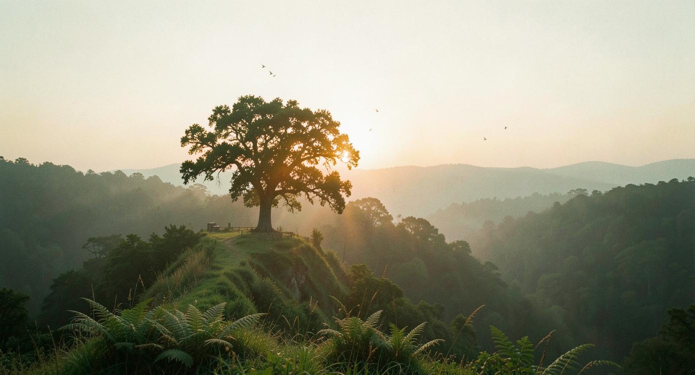

Frame A
The Paper Edition
The station's own publication. Warm paper, letterpress serif, the world reproduced as a matted plate with a proper caption. The most credible and the cheapest to make excellent — it works with no WebGL at all.
- Surface
- Warm paper, ink, hairline rules
- Type
- Fraunces · Instrument Sans · Martian Mono
- Plate
- 5:6 matted print, 10px paper margin
- Judge it on
- Warmth, credibility, print feel
- #F4EFE2 paper
- #1A1C13 ink
- #4D6330 moss
- #9A4F2B clay
Biodiversity field station · est. 2019
A living atlas
of the wild.
Ecocure maps the small ecologies that hold a landscape together — the oak and the owl, the fungus and the fox — and gives them room to return.

English oak, Quercus robur. The oldest resident on the station — 340 years, some 2,300 species in its crown.
01 — Flora
The quiet
architects.
Plants make the air, the shade and the soil. We survey them crown to root, then let the woodland close around them.
- 001English oakQuercus roburKeystone
- 002Turkey tailTrametes versicolorDecomposer
- 003Roe deerCapreolus capreolusResident